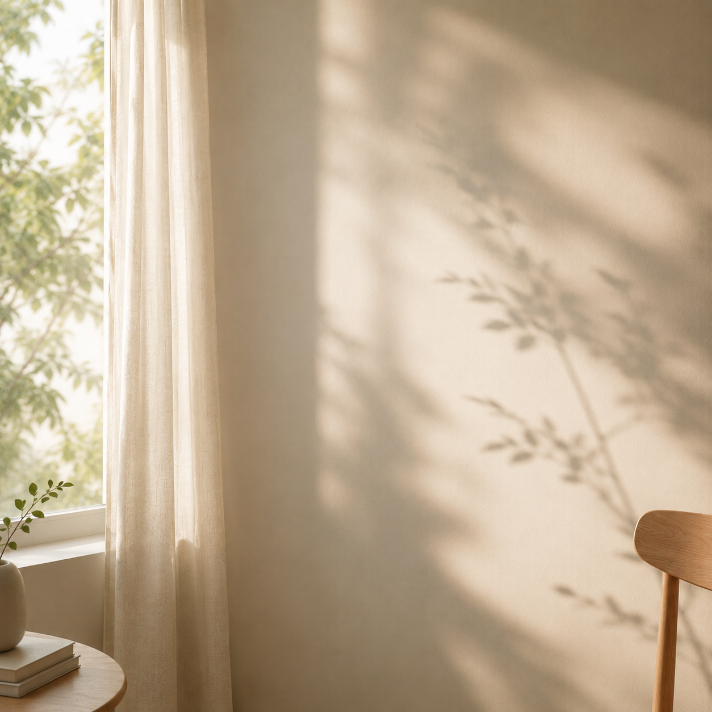
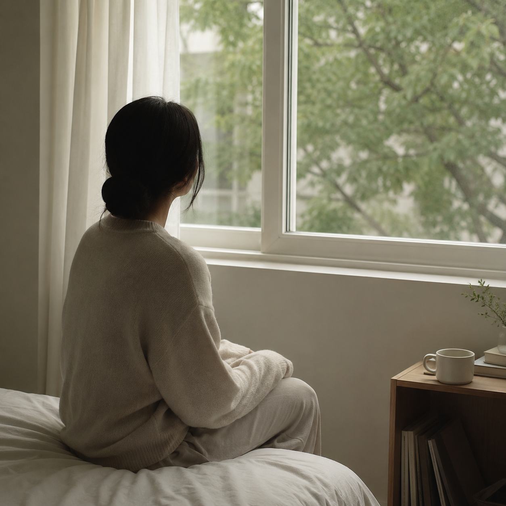
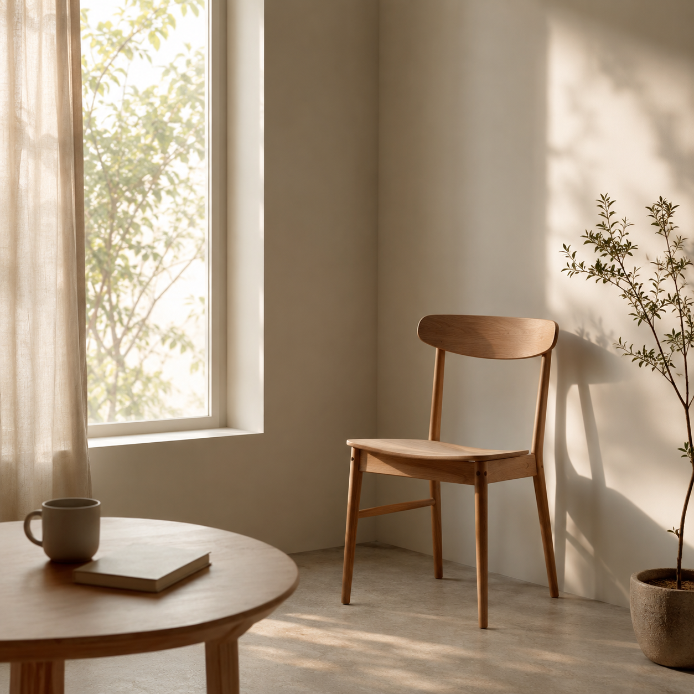

PROJECT RE:DEFINE
쉬고 있는데도,
마음은 자꾸 바빠지는
당신에게
멈춘 시간이
실패가 되지 않도록.

이런 마음, 낯설지 않다면
쉬고 있는데
더 불안해요
사람들과
멀어진 느낌이에요
나만
뒤처진 것 같아요

잘하지 않아도 괜찮습니다
지금 바로 잘할 필요는
없어요.
천천히 시작해도
괜찮습니다.
평가받는 곳이 아니라,
경험하고 표현해보는 곳입니다.
16주 자기 재정의 여정
치료가 아니라 경험으로,
조언이 아니라 선택으로
나를 다시 써 내려갑니다
잘해야 하는 프로그램이 아니라,
연결을 다시 시작해보는
프로그램입니다.
나만의 속도로, 부담 없이.
PROJECT RE:DEFINE

부담 없는
첫걸음부터
함께 시작해요
조용히 신청해보기 →
- 기간
- 2026년 5월 - 11월
- 장소
- 광명시 청년동 · 온라인 Discord · 관내 공간
- 문의
- 광명시 청년동
처음부터 많이
말하지 않아도 괜찮아요